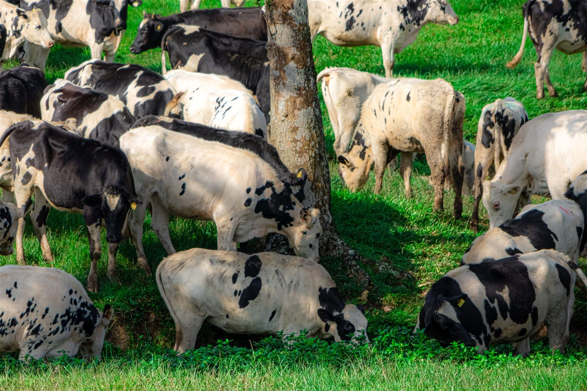
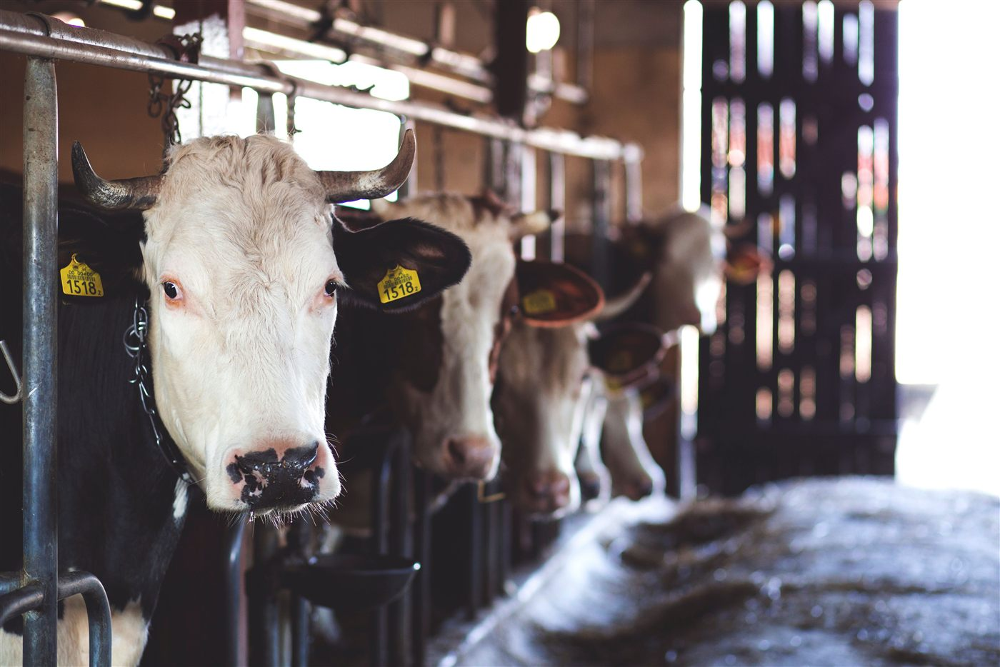
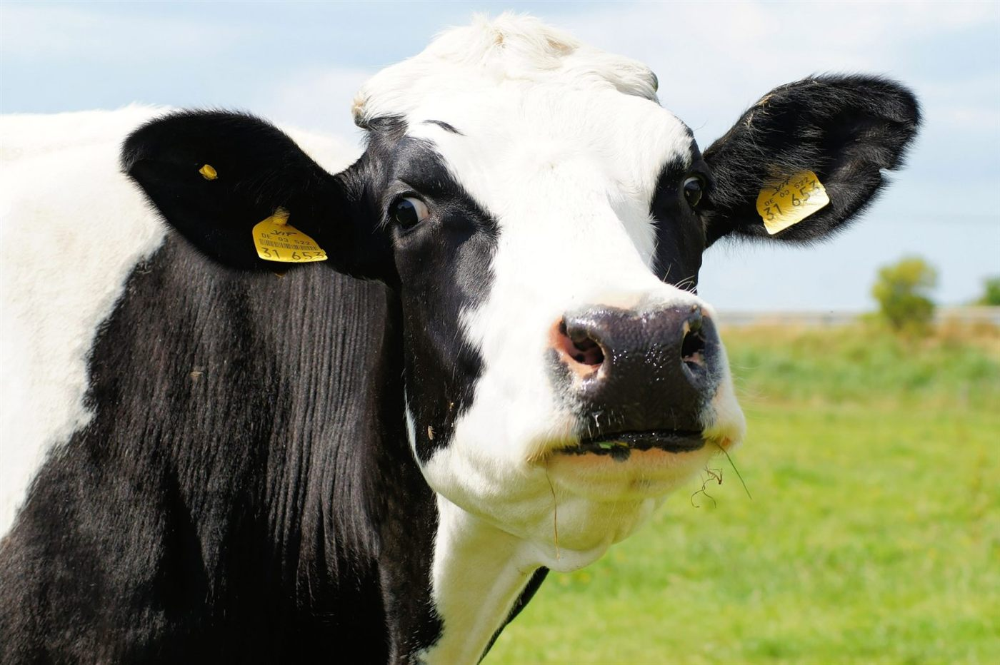
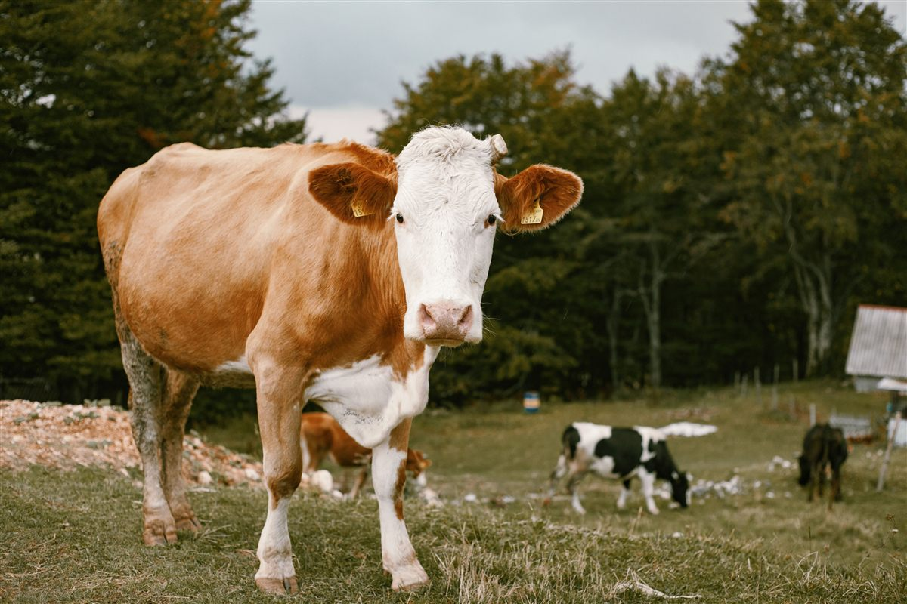

Total ganado
0—Resumen del hato
Panel de control
PROGANADO
GESTIÓN GANADERA— —
GESTIÓN GANADERA— —

OPERACIÓN GANADERA
Información clara
para mejores decisiones.
Centraliza la salud, reproducción, ordeño y trazabilidad de tu hato en un solo lugar.PROControl
del hato
del hato
En gestación
0—En retiro ICA
0Leche suspendida por medicamentoProducción hoy
0 LSin registro de hoyAgenda sanitaria
Próximos eventos
Inventario
Composición del hato
0animales
Acopio Colanta
Última entrega
Trazabilidad
Actividad reciente
Visión integral
Una operación
bien gestionada.
ProGanado conecta cada momento clave de la finca.

